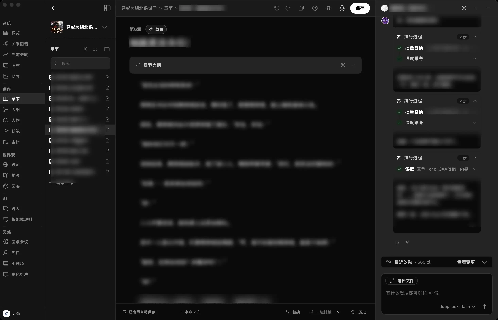
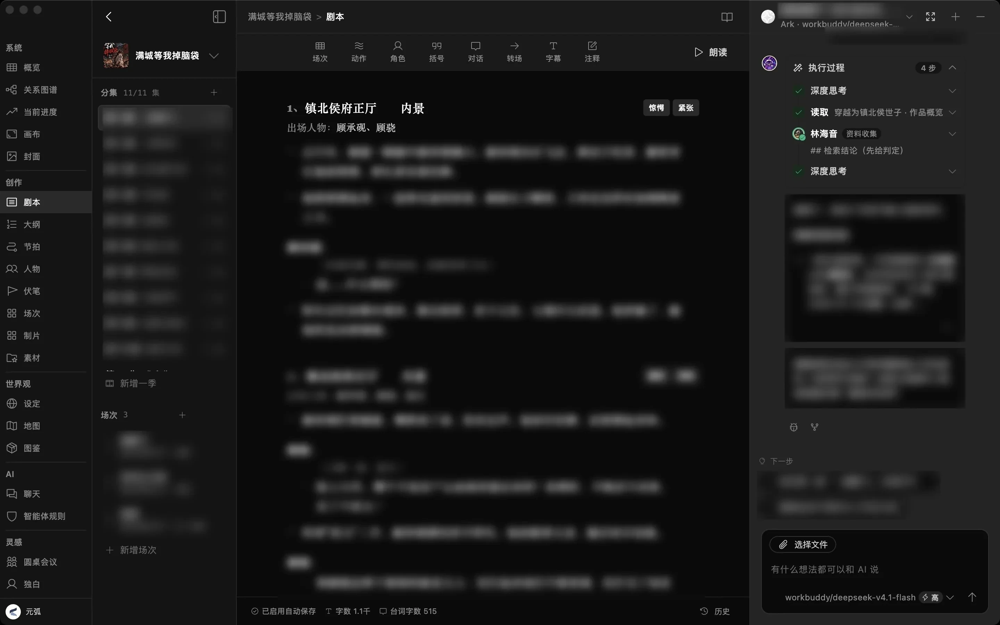
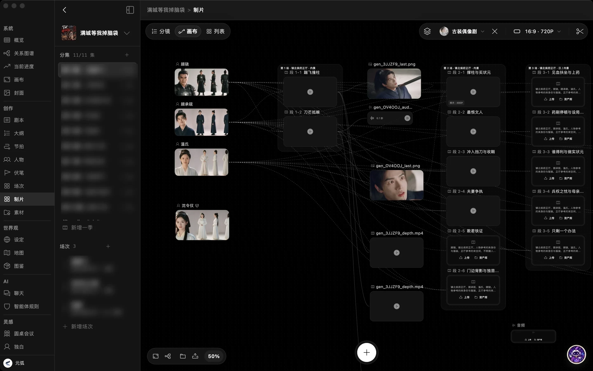
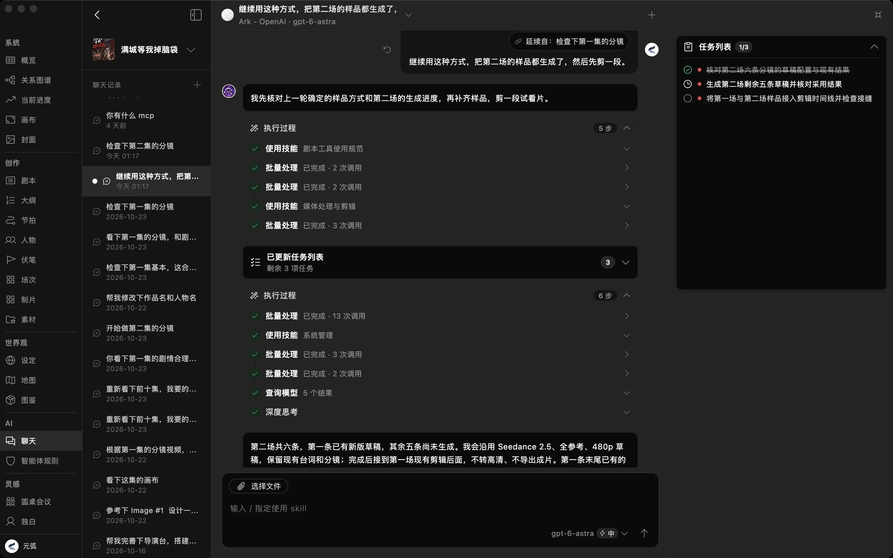

AGENT NATIVE · AI 视听创作成片平台
元弧MetaArc
小说、剧本、画布、导演台、剪辑，都是智能体的工具。
一句话，从原著走到成片。
把第一卷改编成短剧，做出第一集的成片
一句话，
智能体自己走完六步
›把第一卷改编成短剧，做出第一集的成片
-
01读原著文本模型 检索章节与设定，梳理人物和主线 -
02改编剧本文本模型 对照原著拆分剧集与场次，写对白和动作 -
03拆分镜文本模型 按场次铺分镜节点，逐镜写提示词 -
04生成素材图像 · 视频模型 角色定妆、参考图、视频片段 -
05剪辑剪辑台工具 素材上轨、分割修剪、加字幕 -
06成片视觉模型 渲染预览，抽帧检查画面





 ▶ 第一集 · 成片预览
▶ 第一集 · 成片预览
SC.03 AGENT NATIVE
模块就是工具，
过程全程可见
01 每个模块都开放给智能体
小说、剧本、画布、导演台、剪辑台都以工具形式提供。智能体自己拆解任务、按顺序执行、检查结果。
02 读完整部作品再动手
按需检索章节、设定和人物，不用每次重新交代上下文，角色和画面前后保持一致。
03 任务和改动摆在眼前
任务列表、执行过程、改动记录全程可见，不满意随时回滚。云端算力调度与S3永久资产存储，保障成片交付安全。

SC.04 STUDIO
每一步，
你也能亲手接管
智能体用的工具，就是你用的工作台。哪一步想自己来，随时接过去。

SC.05 UNIFIED AI GATEWAY
统一算力中枢，
多模型无缝切换
MetaArc 统一集成 New-API 高性能算力网关，提供点数计量、渠道容灾与秒级流式响应。同时也支持创作者自带 Key (BYOK)。
文本与推理
Claude 3.5 Sonnet · GPT-4o · Gemini 1.5 Pro · DeepSeek-V3/R1 · Qwen
图像生成
Seedream 5.0 · 通义万相 2.7 · DALL-E 3 · Gemini Flash Image
视频生成
Doubao Seedance 2.5 · MiniMax H3 · 万相 Wan 2.7 · 可灵 Kling 3.0
SC.06 PLANS & QUOTA
灵活套餐，算力即充即用
基于 MetaArc 云端中台与 New-API 统一度量。无论是个人创作者写小说、改编剧本，还是专业工作室批量生成 4K 视频与自动剪辑，都能找到最匹配的方案。
体验版 (Free)
适合新手创作者体验小说扩写与剧本拆解。
¥
0
/ 永久
- 赠送 500,000 算力点数
- 支持 Claude / GPT / DeepSeek
- 500MB 云端存储配额
- 单任务并发排队
最受欢迎
专业版 (Pro)
独立创作者首选，支持高画质生图、生视频与无限画布。
¥
99
/ 月
- 每月 50,000,000 算力点数
- 解锁 Seedance 2.5 / Kling 4K 视频
- 20GB S3/R2 云端永久资产存储
- 3 路并发高速生成通道
- 多轨剪辑无水印成片导出
工作室版 (Studio)
编剧工作室与短剧制作团队的工业化量产利器。
¥
499
/ 月
- 每月 300,000,000 算力点数
- 全模型专属 VIP 渠道优先级
- 200GB S3/R2 云端对象存储
- 10 路超高并发任务处理
- 多设备云同步与团队分支审查